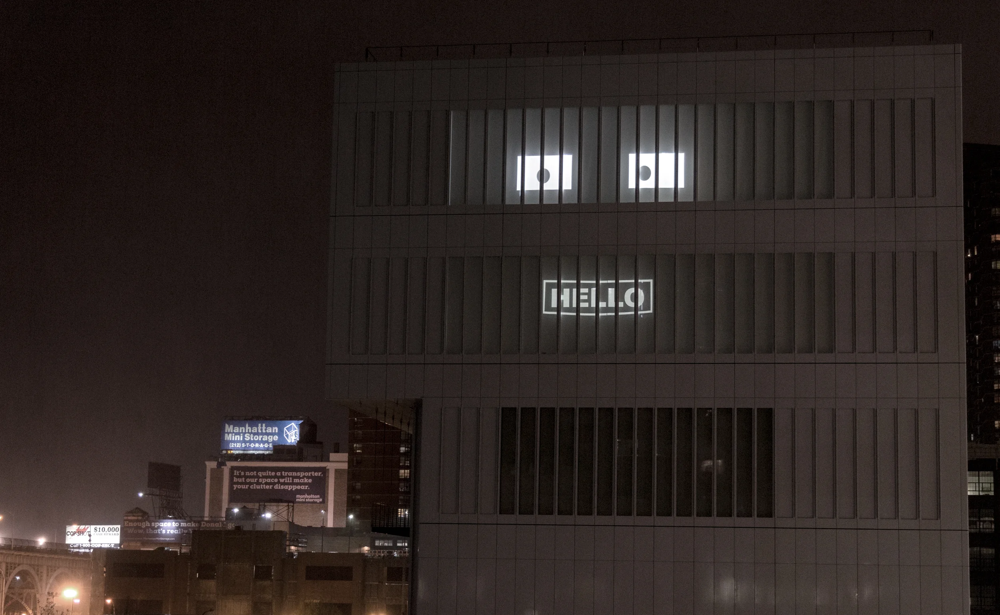

I enjoyed this artist talk session after our quiz. I liked how we were able to go in depth into the different pieces of Sara’s projects. Sara’s landscape and urban development projects were very new to me. It was interesting to learn the way she thinks and processes into creating her projects that she showed. Sara’s night talk projects were one of the first to be talked about in class and it caught my eyes. I find it very similar to the Las Vegas sphere that I have seen a few times. It was so cool that they were able to turn the university building into a show. They were able to project faces onto the building at night which created different faces. This created a futuristic feel for me and a very fun project to see. It blew me even more when Sara revealed that she prepared a 50 person live performance for its opening. This is such a large scale project that they took a lot of thought into. This made me wonder how long it took them to stretch the project out and put it together into real life. Sara’s mirror project was on a much larger scale than her night talk project. It was interesting this performance project was set in a large open space. Through their images I was just shocked at how lovely the environment was. The sun was just setting, creating an atmosphere that was warm and attractive to the eye. There was a part where they projected a picture onto a horse and I found that so fascinating. The experiment with sound just reminds me how much sound can change your feeling of a place and how you react. Their wind felt shattered and the project expressed a lot of emotion. The actor in the project was in white face paint which reminded me of mime. The actor used their facial expression to express how they were feeling which ranged from shock to sadness in the span of their performance. Their body movement was free as they used their whole bodies to express their emotion. The whole performance included no propers and it was all up to what we saw from the actor and the music that built what we felt. The artist's choice of sound design was interesting as it changed throughout the project as it was matching how the actor was expressing. It was so delicate how I was able to feel the emotion that the actor was going through as it changed from the beginning to the end. It was perfect to end the show with a feather that fell and the camera moved with it until the story ended.